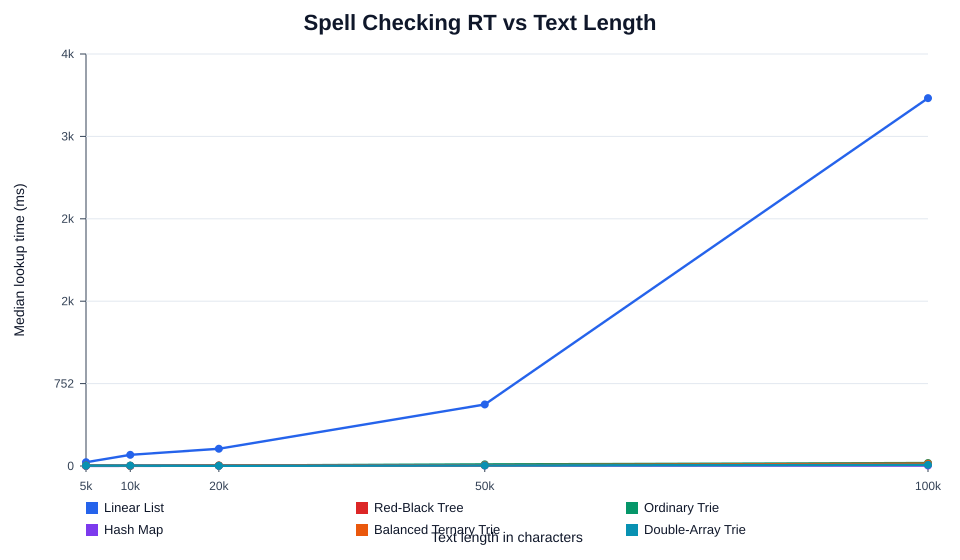
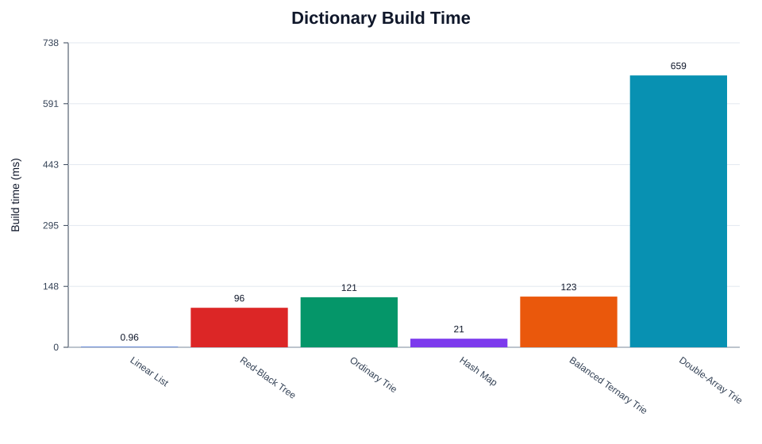
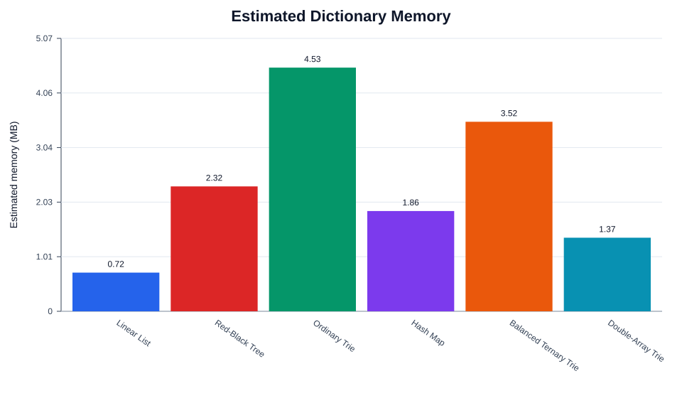
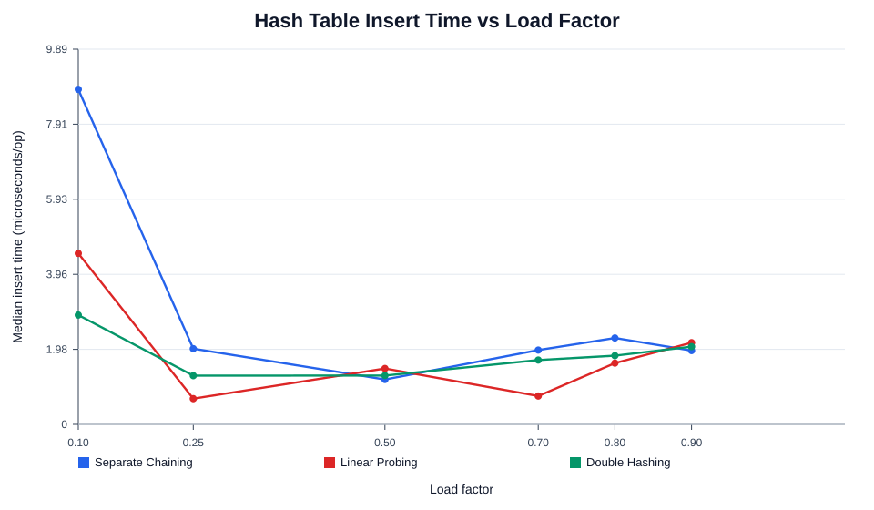
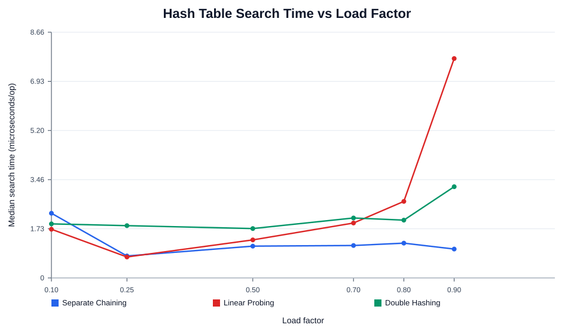

Algorithms Assignment II
Generated at 2026-05-19T22:38:29.655Z. This report is produced by node run.js and is backed by JSON benchmark outputs in output/.
Part 1A and Part 3: Dictionary Races
The benchmark uses 30000 normalized words from english_words.txt. The default limit keeps the naive linear list measurable while still using a large dictionary. Increase DICTIONARY_LIMIT to run a heavier experiment.
Fastest build: Linear List. Fastest lookup on the largest text: Hash Map. Smallest estimated memory: Linear List.



Build and Memory
| Dictionary | Build ms | Estimated memory |
|---|---|---|
| Linear List | 0.956 | 736.1 KB |
| Red-Black Tree | 95.750 | 2.32 MB |
| Ordinary Trie | 121.327 | 4.53 MB |
| Hash Map | 20.800 | 1.86 MB |
| Balanced Ternary Trie | 122.874 | 3.52 MB |
| Double-Array Trie | 659.074 | 1.37 MB |
Largest Text Lookup
| Dictionary | Characters | Tokens | Lookup ms | Misspelled |
|---|---|---|---|---|
| Linear List | 100008 | 10328 | 3356.959 | 939 |
| Red-Black Tree | 100008 | 10328 | 19.109 | 939 |
| Ordinary Trie | 100008 | 10328 | 27.133 | 939 |
| Hash Map | 100008 | 10328 | 4.738 | 939 |
| Balanced Ternary Trie | 100008 | 10328 | 21.689 | 939 |
| Double-Array Trie | 100008 | 10328 | 10.663 | 939 |
Part 1B and 1C: Graph Tasks
Triwizard uses a single BFS from the exit. After the distance map is built, every wizard's travel time is computed as shortest-path corridor distance divided by speed.
| Wizard | Shortest distance | Speed | Minutes |
|---|---|---|---|
| Krum | 3 | 1 | 3.000 |
| Cedric | 10 | 3 | 3.333 |
| Fleur | 9 | 2 | 4.500 |
Winner: Krum.
Aunt's Namesday is solved as a bipartite graph check using an explicit DFS stack. The two colors are the two tables.
Table 1: Petunia, Vernon, Dudley, Marge
Table 2: Harry, Arabella, Lily, James
Part 2: Full House
The benchmark compares separate chaining, linear probing, and double hashing as the load factor increases. Insert and search times are reported as microseconds per operation.
At load factor 0.9, fastest insert is Separate Chaining and fastest search is Separate Chaining.


| Table | Load factor | Insert us/op | Search us/op | Found |
|---|---|---|---|---|
| Separate Chaining | 0.9 | 1.945 | 1.018 | 18009 |
| Linear Probing | 0.9 | 2.154 | 7.732 | 18009 |
| Double Hashing | 0.9 | 2.050 | 3.215 | 18009 |